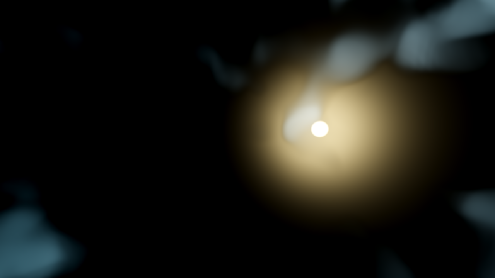
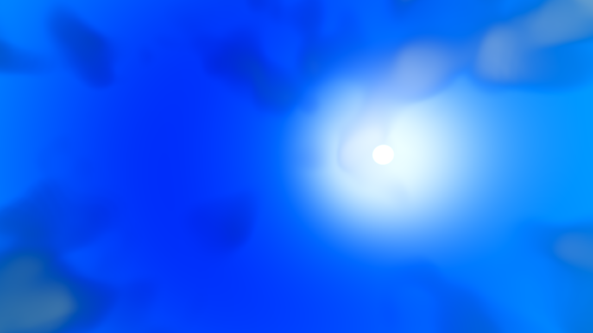
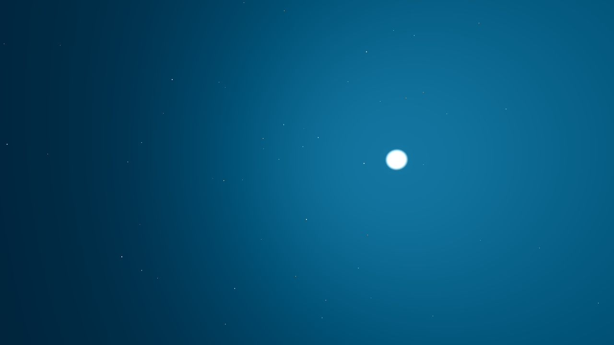
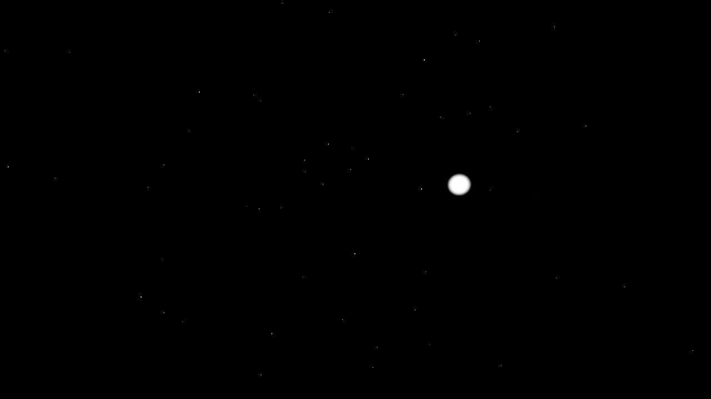
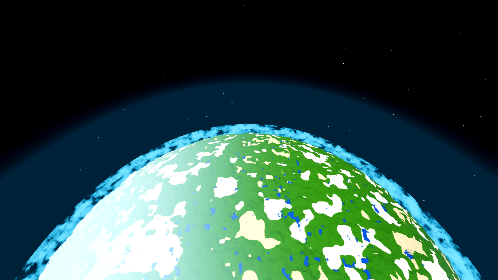
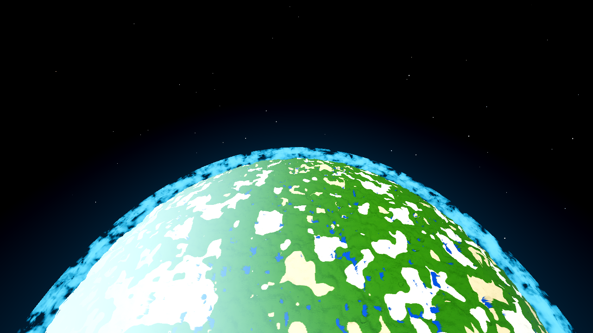
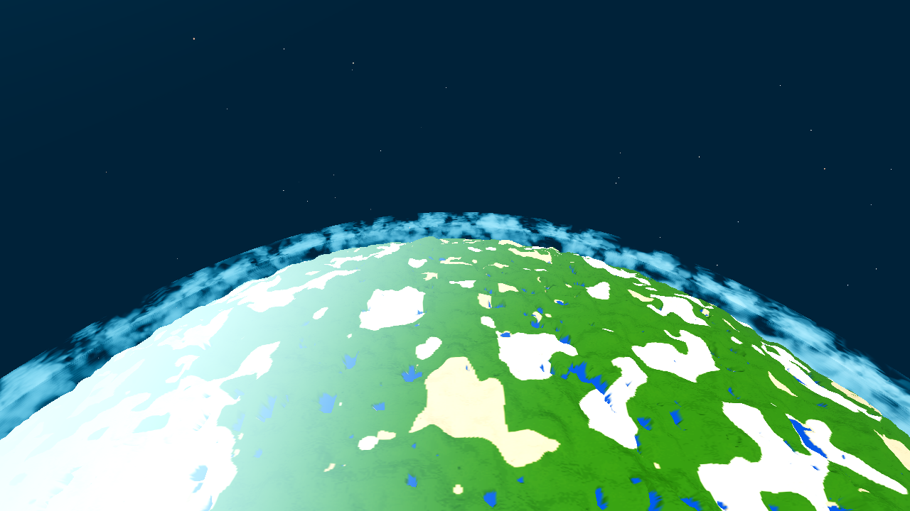
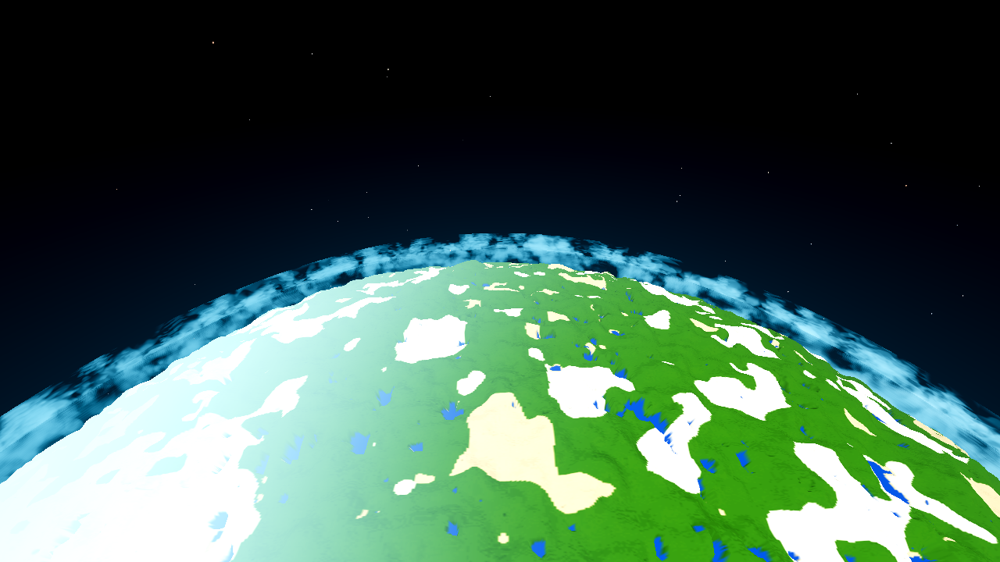

Reports (user, 2026-10-11, AC-0417 build): (1) “The sky is dark during the day.” (2) “When you do into space, there is a large blue circle above and below you creating a horizon of sorts… there should not be a horizon in space.” (3) “Outer edge of the atmosphere is visible now but does not extend past clouds.”
Files changed (4): godot/core/aero_sky_gradient.gdshader (the fix),
godot/core/aero.gd (comment), godot/ARCHITECTURE.md (sync),
godot/scenes/harness.gd (additive env-gated AWECRAFT_CAM_ZENITH aim; the
temporary measurement probe was reverted at closeout). godot/world/ untouched — genhash
25/25 byte-identical. No commits/pushes (fenced to the coordinator).
sky_on() only; sky_off() bit-for-bit). The notes’ shell diagnosis was
partially right: the “blue circle” is the A-shell tangent (report 2), but
report 1 has a separate root cause (the day/night/dusk gradient was pushed to the shader and never
read on the ON path — the ground dome rendered pure black), and report 3’s “edge” is the clamp +
0.25 A tail of the same limb term. Daytime sky: ground-zenith dome median luminance
0.0 → 85.6. No boundary surface above or below the player, tested inside/at/outside
the shell; the atmosphere now reads as a smooth air-column glow wrapping the world, brighter at the
rim, extending ~1050 m past the cloud tops with no hard edge.Root cause (confirmed in frames, not assumed): sky_on() painted
mix(space_color, u_air, below*(1-w)) — a flat dark “air” fill for everything under the
local horizon and pure space above it. The day/night/dusk gradient uniforms
(horizon/mid/zenith_color, pushed per frame by game.gd) were declared and
fed but never read on the ON path. Frame b02 (ground, looking straight
up): the entire dome is RGB (0,0,0) except the sun disc — a pure-black sky at 12:30. The ground
forward view b01 shows the same black dome over the horizon (only the haze band and the
sun break it up).


| Ground zenith dome (L = 0.2126R+0.7152G+0.0722B, 0–255) | BEFORE | AFTER |
|---|---|---|
| median | 0.0 | 85.6 |
| p10 / p90 | 0.0 / 101.7 | 55.0 / 178.0 |
The gradient is keyed to the local zenith elevation u = clamp(dot(dir, up),0,1)
— horizon → horizon_color (223,246,251), 30 % → mid (95,198,234), zenith →
zenith_color (46,134,216) — and fades to space through the AC-0417 A window
(w = smoothstep(0.25A, A, alt)), so the day sky thins continuously into space as you
climb. The forward ground view a01 shows the user’s actual
viewpoint: bright day sky, pale horizon haze band, cloud deck below the horizon — no black dome.
Root cause (confirmed in frames): the limb term was
min(exp(-(b - u_atmo_radius)/u_atmo_falloff), 1.0) — for every ray inside the A-shell
tangent (b < 5200) it evaluates to the flat maximum 1.0, and it drops to ~0 over just
300 m past 5200. Seen from outside the shell that paints a flat full-strength annulus with a
hard circular outer edge at the A-shell tangent — exactly the “large blue circle”. Measured
in b07 (2141 m): a flat L = 28.4 plateau from b = 5194 down to the disc, with a 0 → 28.4
jump compressed into b ∈ [5406, 5194]; b09 (3141 m): the flat 28.4 starts at exactly
b = 5200. “Above and below” = the annulus surrounds the disc in all azimuths (it is a function of b
only), and the same term lit the whole upward hemisphere from outside the shell
(b08: a uniform full-strength dome looking straight up, median L = 74.5).




“No boundary surface” matrix (frames + measured dome/edge metrics):
| Position vs. shell | Above the player (zenith) | Below / around (limb + nadir) |
|---|---|---|
| INSIDE — 1041 m (a03, a04) | Space-ward dome (92 % of the way to A ⇒ 92 % space, median L = 0.0, w = 0.917); no edge in frame. | Smooth glow from the disc out to the tail; no plateau, no tangent edge; max |ΔL| per 3 rows is the deck ring itself (b ≈ 4300), not a sky boundary. |
| AT — 1200 m = A (a05, a06) | Space (median L = 0.0, w = 1 — the AC-0417 “sky is space at A” contract, kept). | Smooth halo wrapping the disc; fade 0.0 → 0.89 between tail and disc is a continuous gradient (rows sampled every 6 px show monotone values). |
| OUTSIDE — 2141 m (a07, a08, a07n) | Pure space (median L = 0.0). | Smooth rim glow 1.0 → 0; nadir frame a07n is unchanged planet + deck (no new boundary below). |
| FAR OUTSIDE — 3141 m (a09) | — (same as a08) | Same smooth halo at the far view (before: b09’s hard-edged flat disc). |
The old-edge region, side by side (centre column, b around the old tangent 5200):
Wraps the world, all directions: the glow is a function of impact parameter b (angle from nadir) only. Measured left/right symmetry of the sky annulus in a07/a09/a05: mean |ΔL| = 0.0–0.7 over 312 sample pairs per frame (quantisation level) ⇒ the halo seen in the frame continues unchanged around the azimuths not in it, including straight behind/below the player.
Root cause: the same limb term. The cloud deck tops sit at R+450 (b ≈ 4450 at these views) but the flat annulus ran out to b = 5200 with a 300 m tail — the visible “edge” (and the whole 28.4 plateau) floated ~750 m past the cloud tops, so the atmosphere’s edge read as a separate surface sitting above the clouds, not as the clouds’ own envelope.


All in aero_sky_gradient.gdshader, sky_on() only (the OFF path is
bit-for-bit; genhash 25/25):
| Report | Change |
|---|---|
| 1 | The day/night/dusk gradient is now read on the ON path: keyed to
local zenith elevation u (horizon → mid at 30 % → zenith at 90 %), then thinned to space
through the A window: mix(grad, space, mix(w*w, w, u)) — zenith by w, grazing rays by
w², so the horizon band lingers a little longer (the AC-0417 w = 1 → space contract holds exactly at
and above A). A horizon haze band (exp(-|hl|*9), gated by 1−w) restores the pale
day-horizon the AC-0401 wash used to give. Below the local cone the unchanged F3 mix applies. |
| 2+3 | The limb term is now the forward air column through the shell’s outer
tail (rout = R + A + 0.25A = 5500), camera-aware: the ray crosses the rout sphere at
s = −r·hl ± √(rout²−b²); outside the shell, heading in, the visible air is the full
chord (1.0 at the terrain limb, 0.89 at the deck top, 0.49 at the old A-shell tangent, 0.0 at the
tail); inside the shell or pointing away it is the near exit (0.04 straight up at A; exactly 0
above the horizon from outside). Normalised by the full chord at the R+SEA disc tangent, clamped to
1.0 — smooth, bounded, no clamp-edge, no tail discontinuity. Same colour (horizon/mid mix), same
sun-side boost, same AC-0401/AC-0417 gates. |
Round-2 catch (why “r2”): the first limb revision used the plain 2-D chord formula, which painted the upper hemisphere from outside the shell as if the ray grazed it — a visible circular glow in the upward view (caught in a08-round-1, a variant of the very report-2 complaint). The camera-aware crossing (r2) removes it: a08 is now pure space.
Partially right. The notes hypothesised the “circle” was the atmosphere shell surfacing as a visible boundary: correct for report 2 — the circle is exactly the A-shell tangent of the clamped limb term (edge measured at b = 5194–5200 in b07/b09, the shell is at 5200). But report 1 is a separate root cause (gradient uniforms pushed, never read — the dome was black even at ground level, where the shell geometry plays no part), and report 3 is the same limb term’s clamp + 300 m tail geometry rather than a second surface. One shader rewrite covers all three.
| Gate | Command (essence) | rc | Result |
|---|---|---|---|
| Pre-fix baseline | 11 BEFORE renders (b01–b09 + nadir + probe) | 0 ×11 | all rc = 0, PNG written, 0 script errors per log; genhash baseline captured (10:40) |
| G0 (after r1 fix) | godot --headless --path godot --quit + gate_census.py |
0 | SCRIPT ERROR 0, SHADER ERROR 0, census ok (g0-after.log) |
| SMOKE battery (after r1) | AWECRAFT_BATTERY="player;interact;light;fluids;genhash" |
0 | ok:true, 260 s, 0 script errors (smoke-after.log) |
| genhash (after r1) | via battery | 0 | 25/25 byte-identical to pre-fix baseline |
| PROBE meshprobe (after r1) | AWECRAFT_LOGIC=meshprobe | 0 | ok:true, match_rate 1.0, verts_gd = verts_cpp = 255628 |
| shaderforce (after r1) | AWECRAFT_LOGIC=shaderforce (lavapipe) | 0 | ok:true, count 12, failed [] (aero_sky_gradient: declared 23 = params 23, ok) |
| G0 (after r2) | as G0 above | 0 | 0 / 0, census ok (g0-r2.log) |
| SMOKE battery (final) | as above | 0 | ok:true, 0 script errors (smoke-r2.log) |
| genhash (final) | via battery | 0 | 25/25 byte-identical |
| PROBE meshprobe (final) | as above | 0 | ok:true, match_rate 1.0 |
| shaderforce (final) | as above | 0 | ok:true, count 12, failed [] |
| G0 (after probe revert) | as G0 above | 0 | 0 / 0, census ok (g0-final.log) |
Renders: 11 BEFORE + 10 AFTER frames (the 5 r2-affected AFTER frames re-rendered after the
camera-aware limb), all rc = 0 with PNG written (no SNAP FAIL). Logs in
.scratch/AC-0419/ (g0-*, smoke-*, meshprobe-*, shaderforce-*, b*/a* logs, genhash
before/after lines).
tasks/TASKS.yaml edits — fenced to the coordinator.godot/scenes/main.gd, godot/autoload/game.gd,
godot/entities/drop.gd, godot/autoload/debug.gd, AC-0067/AC-0384 files) —
still modified by another session in the working tree, left exactly as found.sky_off() and the OFF path untouched (bit-for-bit) — the report frames are all ON-path;
the OFF path has its own AC-0417 contract.tasks/harness_data.yaml: the zenith aim is an option on the existing
planet cam, not a new arm; no doc row needed (the nadir aim from AC-0417 set the precedent).BEFORE (AC-0417 build, pre-fix): b01 ground-limb, b02 ground-zenith, b03/b05/b07/b09 limb at
1041/1200/2141/3141 m, b04/b06/b08 zenith at 1041/1200/2141 m, b07n nadir 2141 m, b07p probe
re-render. AFTER (post-fix): a01–a09 + a07n (same grid; a03/a04/a05/a06/a08 are r2 renders, the
camera-aware limb). All in captures/.